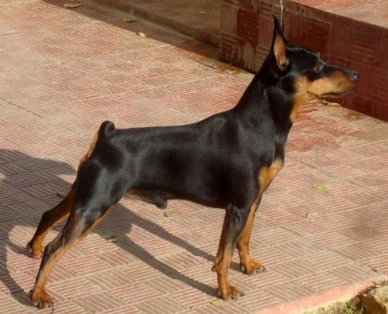

Ancestor ♂

Kimon
Chernaya Liniya
Мъжки
Шампион
- Титли: Ch AZE, J.Ch BALK, CH BUL, CH BALK, CH SRB, CH MKD, CH AZE, CH MNE, J.CH BUL, J.CH BALK, J.CH TUR, J.CH MDA, J.CH GEO, J.CH MKD
- Година: 2010 · Държава: Украйна
Родословие: Баща: Joker Show Evro Style (Русия 2008) | Майка: Dusha Moya Tiara (Украйна 2008)
Развъдник: Людмила Городиская «Chernaya Liniya»
Собственик: Таня Гетова «Von T & Ia»